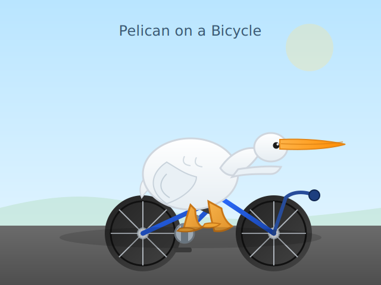

<!doctype html>
<html lang="en">
<meta charset="utf-8">
<title>SVG Compare by Prefix</title>
<style>
  body { margin: 0; font-family: system-ui, sans-serif; }
  header { padding: 12px 16px; position: sticky; top: 0; background: #fff8; backdrop-filter: blur(6px); border-bottom: 1px solid #ccc6; }
  section { padding: 12px; }
  h2 { font-size: 16px; margin: 16px 4px; color: #333; }
  .row { display: grid; grid-template-columns: repeat(auto-fill, minmax(260px, 1fr)); gap: 12px; }
  .card { border: 1px solid #ccc8; border-radius: 8px; padding: 8px; background: #fff; }
  .name { font-size: 12px; color: #555; margin: 4px; }
  .box { aspect-ratio: 1/1; border: 1px dashed #ddd; display: grid; place-items: center; background: #fafafa; overflow: hidden; }
  .box object, .box img { width: 95%; height: 95%; }
</style>
<header><h1 style="margin:0;font-size:18px;">Compare by prefix (text before first '-')</h1></header>
<section id="content"><h2>consortium</h2>
<div class="row">
  <div class="card"><div class="name">consortium-horizon-beta</div><div class="box"><object data="consortium-horizon-beta.svg" type="image/svg+xml" style="width:95%;height:95%"></object></div></div>
</div>
<h2>solo</h2>
<div class="row">
  <div class="card"><div class="name">solo-horizon-beta</div><div class="box"><object data="solo-horizon-beta.svg" type="image/svg+xml" style="width:95%;height:95%"></object></div></div>
</div>
</section>
</html>
<!-- AUTO-GENERATED -->
<section id="generated">
  <h2>Generated Pelican SVGs</h2>
  <div id="gallery"></div>
    <figure id="consortium-horizon-beta">
      <figcaption>Consortium (2x horizon-beta) (horizon-beta)</figcaption>
      <object type="image/svg+xml" data="consortium-horizon-beta.svg" style="width: 480px; border: 1px solid #ccc;"></object>
    </figure>
    <figure id="solo-horizon-beta">
      <figcaption>Solo (horizon-beta)</figcaption>
      <object type="image/svg+xml" data="solo-horizon-beta.svg" style="width: 480px; border: 1px solid #ccc;"></object>
    </figure>
</section>
